Abstract
Self-supervised learning has enabled powerful visual representations at scale, yet its potential for understanding the 3D structure and dynamics of the world directly from raw video remains largely unrealized. We present Scr4tch, a model that learns geometrically grounded 4D representations entirely from scratch using uncalibrated monocular videos. Without requiring camera calibration, geometric annotations, or pretrained geometric models, Scr4tch unlocks self-supervised learning for 4D understanding from large-scale Internet videos.
Our key idea is to learn 4D representations that encode cross-view relationships through latent reconstruction, while constraining how motion is modeled to separate camera motion from scene dynamics and suppress appearance shortcuts. Joint geometric optimization then grounds these representations in an explicit, deformable 4D scene. To train Scr4tch, we additionally collect 2,154 hours of challenging, casually captured videos from YouTube without offline geometric preprocessing. Experiments demonstrate accurate camera estimation, 4D reconstruction, and high-quality novel view synthesis on unseen videos, establishing a path toward scalable self-supervised learning of the dynamic world.
Self-supervised motion masks
Scr4tch predicts a soft motion mask for every frame, learned without any mask, flow or motion labels.
Casually captured video
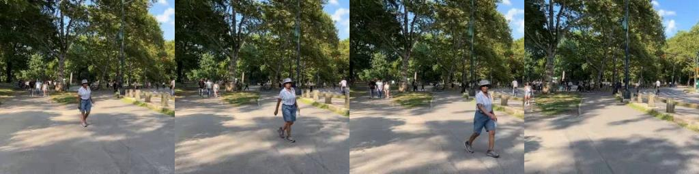
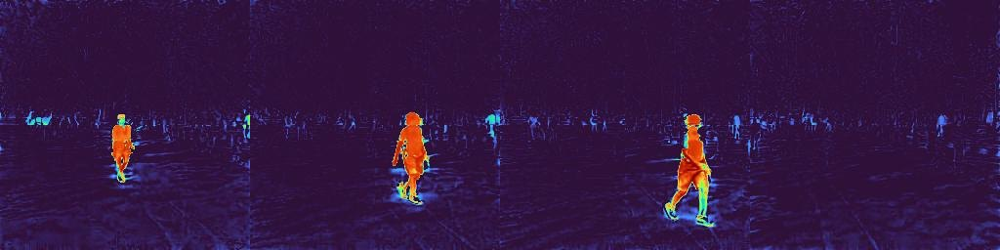
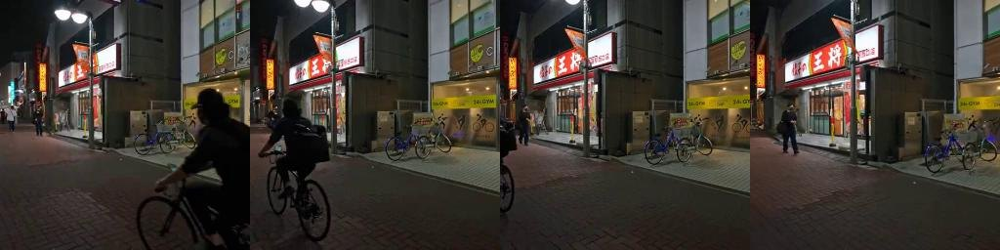
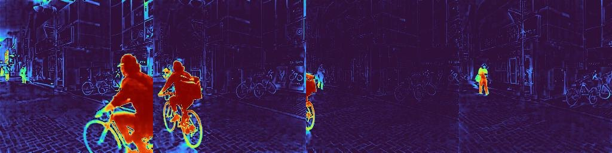
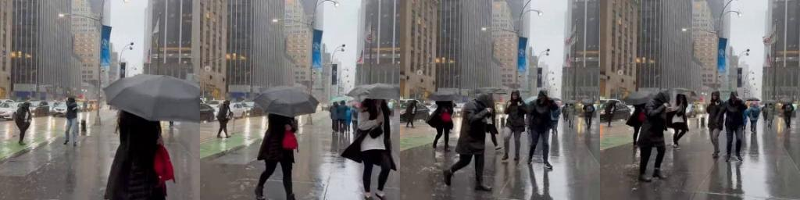
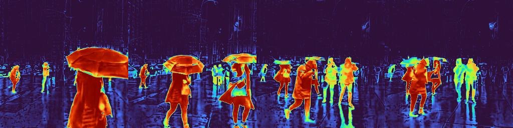
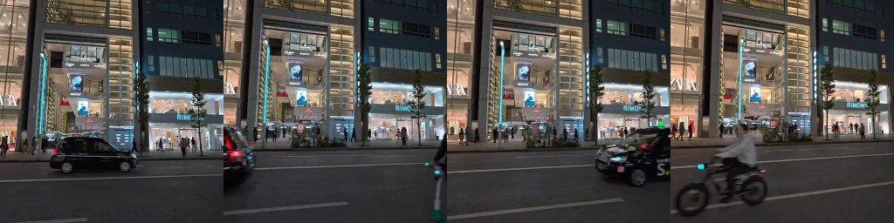
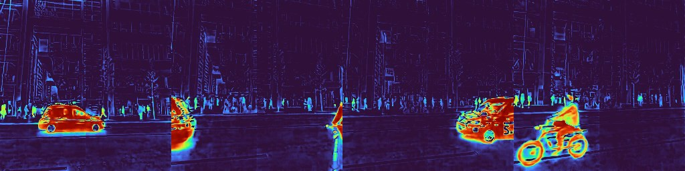
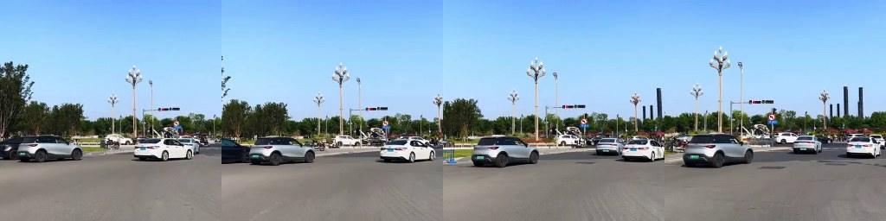
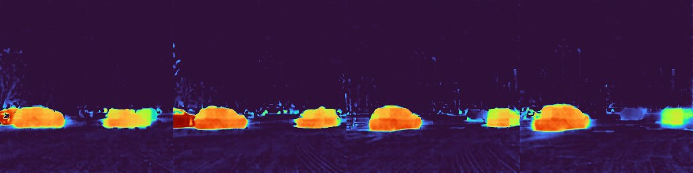
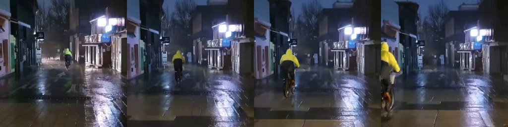
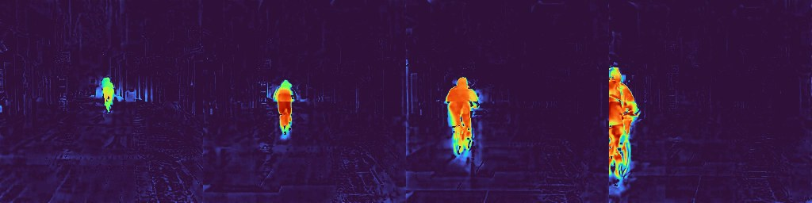
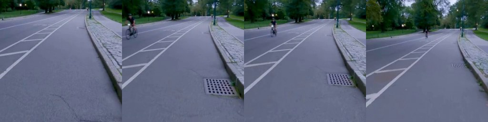
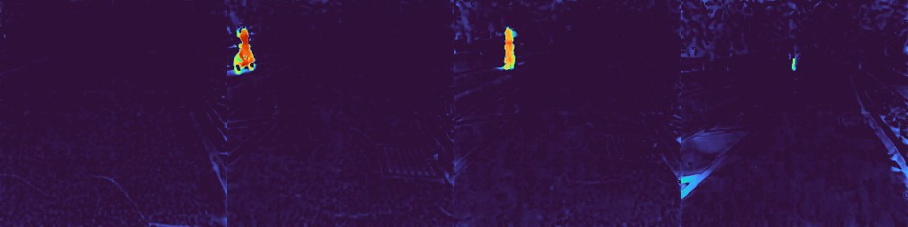
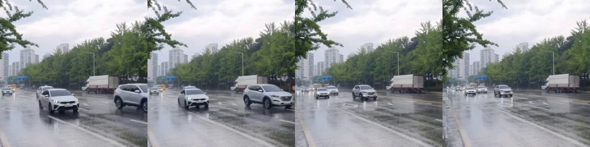
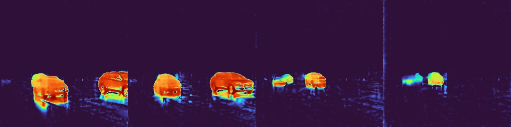
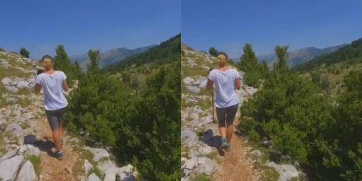
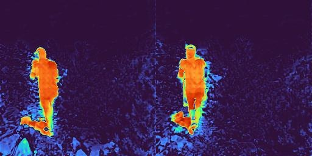
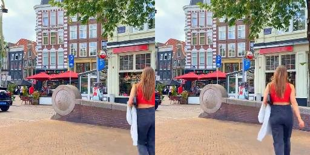
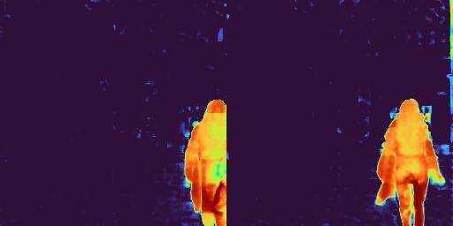
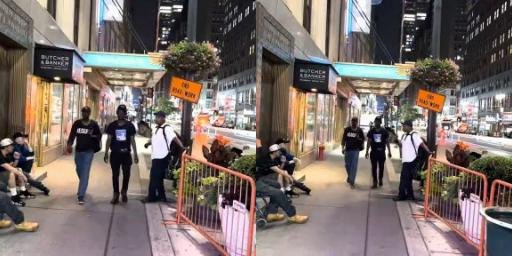
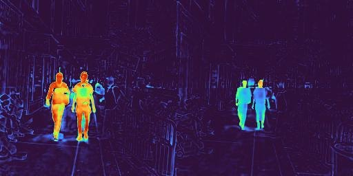
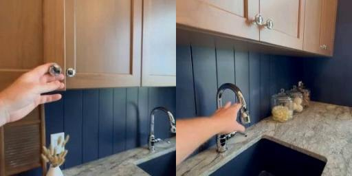
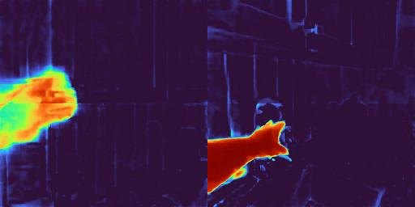
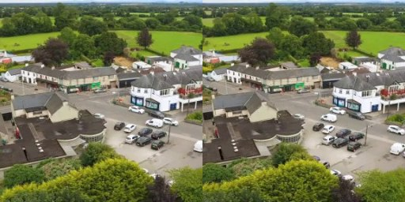
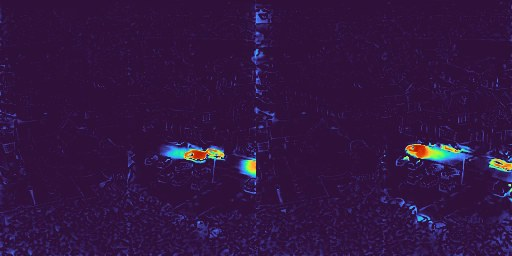
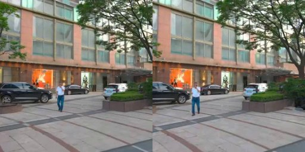
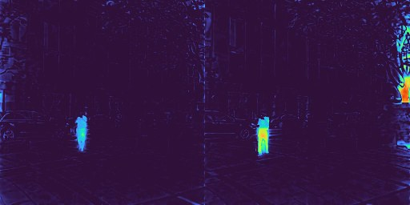
Raw masks from the mask head, on videos where people and objects move independently of the camera. They are somewhat noisy, but follow walking people, cyclists, cars and hands, while static structure stays unmasked as the camera moves.
What the learned features encode
We freeze each backbone, remove its output heads and train the same light probe on top: two convolutional residual blocks on linearly projected features. DINOv2 processes each frame on its own and serves as a general-purpose reference.
| Method | Multi-view | Single-view | ||
|---|---|---|---|---|
| ARE ↓ | δ<1.25 ↑ | ARE ↓ | δ<1.25 ↑ | |
| DINOv2 | 0.097 | 0.906 | 0.093 | 0.913 |
| RayZer | 0.143 | 0.812 | 0.228 | 0.586 |
| XFactor | 0.122 | 0.861 | 0.196 | 0.652 |
| RayDer | 0.123 | 0.841 | 0.169 | 0.737 |
| SelfSplat | 0.086 | 0.929 | 0.077 | 0.931 |
| NAS3R | 0.103 | 0.896 | 0.181 | 0.693 |
| E-RayZer | 0.059 | 0.957 | 0.176 | 0.705 |
| Scr4tch | 0.056 | 0.966 | 0.117 | 0.860 |
| Method | IoU ↑ | Precision ↑ | Recall ↑ |
|---|---|---|---|
| DINOv2 | 0.665 | 0.814 | 0.784 |
| CroCo v2 | 0.649 | 0.789 | 0.785 |
| VideoMAE | 0.612 | 0.767 | 0.752 |
| V-JEPA 2 | 0.562 | 0.747 | 0.694 |
| Scr4tch | 0.766 | 0.895 | 0.842 |
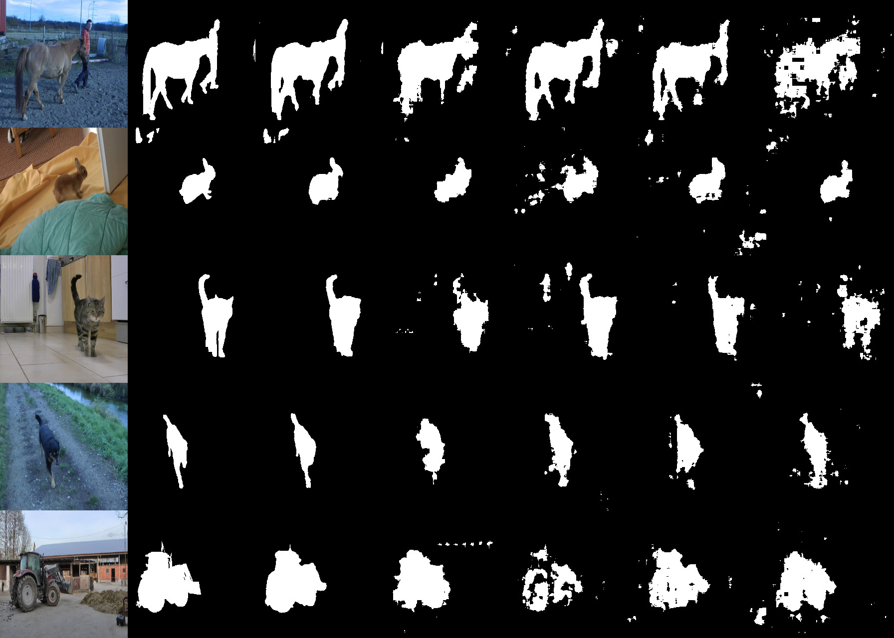
Scr4tch gives the cleanest masks and even catches small, distant moving objects. The video models fall below per-frame DINOv2: generic spatiotemporal features do not readily separate object motion from camera motion.
Camera estimation
Scr4tch decodes an explicit camera, with intrinsics and extrinsics, for every input frame.
Wild-SLAM Mocap
Relative translation accuracy within 5° (RTA@5) over all adjacent frame pairs on Wild-SLAM Mocap, a dynamic benchmark. Without camera labels or pretrained networks, Scr4tch is ahead of every self-supervised method. Supervised methods are shown for reference, and Scr4tch also surpasses the supervised MonST3R.
SelfSplat and PF3plat take ground-truth intrinsics as input; PF3plat and EgoMono4D build on pretrained networks. The full table, including the static DL3DV benchmark, is below.
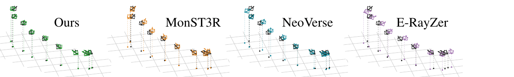
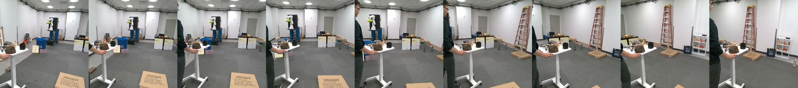
A cart moves along with the camera and stays nearly fixed in the image. The Scr4tch trajectory aligns best with the ground truth (black), recovering the true camera motion despite the moving content.
Full camera estimation table
| Method | Resolution | AREf ↓ | RRA@5 ↑ | RRA@15 ↑ | RRA@30 ↑ | RTA@5 ↑ | RTA@15 ↑ | RTA@30 ↑ |
|---|---|---|---|---|---|---|---|---|
| Supervised | ||||||||
| MonST3R | 288 × 512 | 0.062 | 0.917 | 0.984 | 1.000 | 0.357 | 0.745 | 0.869 |
| NeoVerse | 336 × 560 | 0.020 | 0.987 | 1.000 | 1.000 | 0.705 | 0.936 | 0.987 |
| Self-supervised | ||||||||
| SelfSplat | 256 × 448 | N/A | 0.957 | 0.997 | 1.000 | 0.153 | 0.539 | 0.753 |
| PF3plat | 256 × 256 | N/A | 0.946 | 0.973 | 1.000 | 0.284 | 0.890 | 0.949 |
| NAS3R | 256 × 256 | 0.106 | 0.858 | 0.979 | 0.997 | 0.131 | 0.515 | 0.745 |
| E-RayZer | 256 × 256 | 0.121 | 0.957 | 1.000 | 1.000 | 0.319 | 0.684 | 0.839 |
| EgoMono4D | 288 × 384 | 0.052 | 0.962 | 0.997 | 1.000 | 0.035 | 0.247 | 0.587 |
| Scr4tch | 256 × 256 | 0.040 | 1.000 | 1.000 | 1.000 | 0.528 | 0.930 | 0.992 |
| Method | Resolution | AREf ↓ | RRA@5 ↑ | RRA@15 ↑ | RRA@30 ↑ | RTA@5 ↑ | RTA@15 ↑ | RTA@30 ↑ |
|---|---|---|---|---|---|---|---|---|
| Supervised | ||||||||
| MonST3R | 288 × 512 | 0.294 | 0.962 | 0.989 | 0.993 | 0.494 | 0.915 | 0.967 |
| NeoVerse | 336 × 560 | 0.030 | 0.948 | 0.993 | 0.998 | 0.670 | 0.903 | 0.952 |
| Self-supervised | ||||||||
| SelfSplat | 256 × 448 | N/A | 0.633 | 0.813 | 0.922 | 0.183 | 0.477 | 0.653 |
| PF3plat | 256 × 256 | N/A | 0.891 | 0.979 | 0.988 | 0.351 | 0.859 | 0.954 |
| NAS3R | 256 × 256 | 0.264 | 0.832 | 0.932 | 0.966 | 0.417 | 0.774 | 0.886 |
| E-RayZer | 256 × 256 | 0.068 | 0.923 | 0.970 | 0.985 | 0.771 | 0.913 | 0.955 |
| EgoMono4D | 288 × 384 | 0.129 | 0.795 | 0.956 | 0.985 | 0.054 | 0.322 | 0.641 |
| Scr4tch | 256 × 256 | 0.134 | 0.931 | 0.980 | 0.991 | 0.789 | 0.948 | 0.969 |
Bold marks the best result among self-supervised methods. RRA and RTA count adjacent frame pairs whose relative rotation error or translation-direction error falls below the threshold, without Sim(3) alignment.
Crowded casual video
When moving people fill most of the frame, little static background is left to pin down the camera. Each clip plays frame by frame while the cameras of Scr4tch and a baseline are laid against the reference trajectory. Drag the 3D view to rotate it.
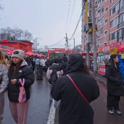
- Scr4tch
- MonST3R
- Reference
Clips from the raw training videos, which carry no camera labels; four of the ten hard clips we examined. They have no ground-truth cameras; each method is aligned to the dashed reference with one global Sim(3). MonST3R and NeoVerse are supervised; E-RayZer is a self-supervised 3D method.
Under unseen appearance
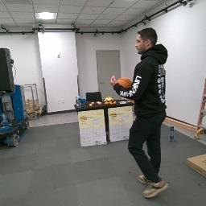
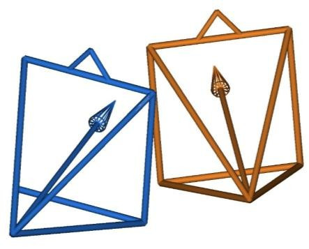
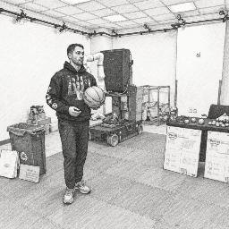
The stylized frame lies far outside the training distribution, and the person moves between the two views. Scr4tch still recovers the relative camera in agreement with the ground truth, which suggests it relies on scene structure rather than appearance statistics.
Disentangling camera and scene motion
A raw video never says which image changes come from the camera, which from moving objects, and which from occlusion. If the model may describe motion with as many tokens as it likes, those tokens can carry the target image itself. Reconstruction then succeeds without the camera, and camera estimates collapse.
Static structure offers a way out. Once the static scene is known, roughly ten pinhole-camera parameters explain how every static pixel changes in a new view. So Scr4tch always keeps its camera tokens and compresses its motion tokens with nested dropout: cameras explain the static scene, and motion tokens keep only what cameras cannot.
Where prior work stops
| Line of work | What it still relies on, or leaves out |
|---|---|
| Supervised feed-forward models DUSt3R, MASt3R, VGGT, MonST3R | Trained on 3D-annotated data or with geometric supervision. |
| Pose-free models built on pretrained parts Splatt3R, PF3plat, NoPo4D, EgoMono4D | Depend on pretrained geometry, depth, matching or flow networks. |
| Self-supervised reconstruction RayZer, E-RayZer, NAS3R | Learn without labels, but primarily target static scenes. |
| Self-supervised on dynamic video RayDer, WildRayZer | Absorb or remove moving content to render a static scene; WildRayZer also uses frozen DINOv3 features. |
| Scr4tch | Raw monocular RGB video only. Reconstructs moving content as explicit 4D geometry with cameras, motion masks and deformable Gaussians. |
Without compression, the camera stops steering the render
Latent renderings without motion tokens, along cameras interpolated between the context views t1 and t9. Trained without nested dropout, the renderings ignore the camera and only blend the two contexts. With it, scene content moves with the viewpoint. Removing nested dropout drops camera translation accuracy (RTA@5) from 0.592 to 0.011.
Compression needs augmentation, and the reverse
To test for appearance leakage, we bootstrap from stylized frames and render from clean context views. If the output picks up the stylized colors, the motion tokens are carrying target appearance.
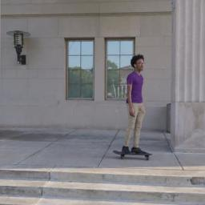
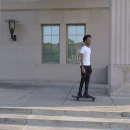
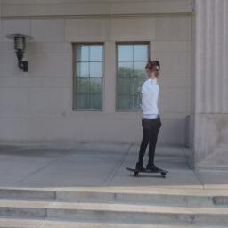
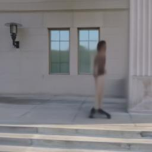
Camera and time, controlled separately
Every frame here is rendered from one 4D scene that Scr4tch predicted. Columns change only the camera, rows change only the time. Drag across the grid, use the sliders, or sweep one axis while the other stays fixed.
NVIDIA Dynamic. Each column uses the decoded camera of one input view, each row the time token of one input view. In Scr4tch the camera alone changes the viewpoint and the time token alone changes the scene. RayDer, also trained self-supervised on dynamic video, absorbs viewpoint changes into its dynamic state, so moving down a column shifts the view as well.
Method
One shared transformer encodes image patches together with per-view camera and time tokens and 64 global motion tokens. Training runs in two stages, and neither uses camera annotations, geometric pseudo-labels or pretrained geometric models.
-
Stage 1 Latent reconstruction pretraining
- A bootstrap pass reads strongly augmented frames (grayscale with random channel weights, color jitter, blur) and infers camera, time and motion tokens.
- The same transformer renders target views from clean context views, with target pixels set to zero.
- Cross-split camera exchange, nested dropout and augmentation together block the shortcuts that would let tokens carry target appearance.
-
Stage 2 Explicit reconstruction alignment
- Camera tokens are decoded into intrinsics and extrinsics and mapped back to tokens, so latent rendering becomes controllable by explicit cameras.
- A mask head predicts soft motion masks that blend a static pass (cameras only) with a dynamic pass (plus motion and time). An asymmetric cost favors static explanations.
- A context-only pass predicts pixel-aligned Gaussians; a light head deforms them toward each target time with 7-DoF residuals gated by the mask.
- Camera gradient routing, photometric reprojection, rendered-depth distillation and single- and multi-view depth consistency ground the scene in geometry.
Full pipeline figure
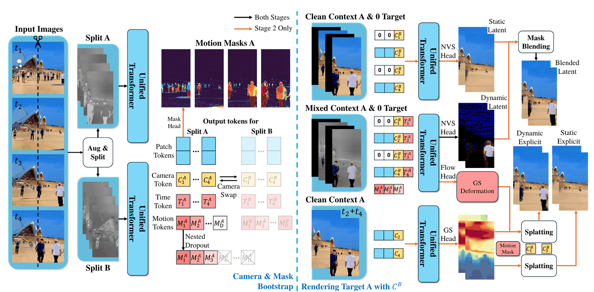
Each of the N strongly augmented frames is spatially partitioned into disjoint splits A and B. A bootstrap pass predicts per-view motion masks and camera and time tokens, plus global motion tokens. Camera tokens inferred from complementary splits are exchanged and nested dropout is applied to the motion tokens. Three subsequent passes render target images from static latent features, dynamic latent features and a deformable Gaussian scene. Image-space losses on these predictions provide self-supervision.
Design details
Camera gradient routing
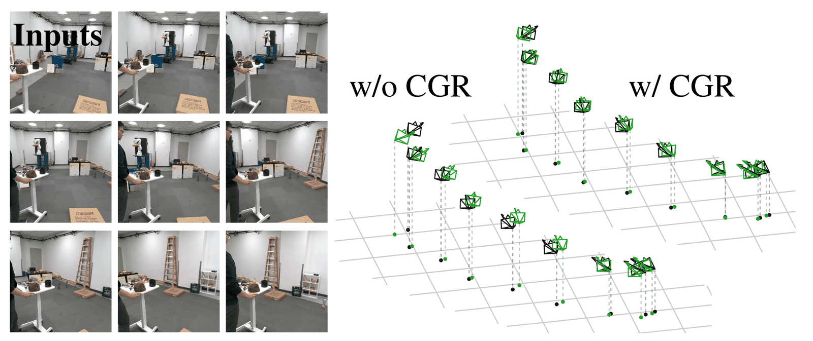
The static rendering uses undeformed Gaussians, which would otherwise be forced to fit moving objects and bend the cameras. With equal probability, it is supervised over the full image with detached cameras, or only over static regions with camera gradients on. On this sequence a cart moves with the camera; without routing it distorts the estimated trajectory (green), with routing the cameras align with the ground truth (black).
Context-only Gaussian pass
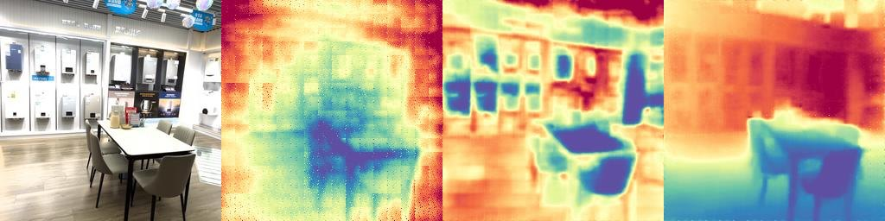
Base Gaussians are predicted from clean context views only. If target views were present, jointly estimated camera conditioning could reveal that the viewpoint does not change, and reconstruction would succeed without meaningful depth.
Rendered-depth distillation
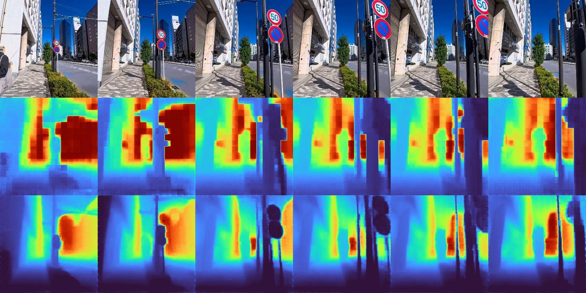
Top to bottom: inputs, raw depths without distillation, raw depths with it. Depths predicted by the Gaussian head get only indirect gradients through splatting and keep a patch-grid pattern. Distilling the rendered depths back into them transfers detail, down to poles and traffic signs.
Single- and multi-view depth consistency
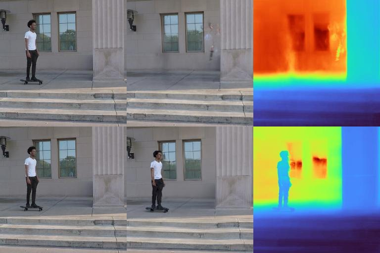
Top row without, bottom row with the consistency loss. A wrong depth with compensating motion can still reconstruct the inputs, but fails from a new viewpoint. Single-view depth cannot tell whether an object moves, so it supervises moving regions, while multi-view rendered depth supervises static ones.
Novel view synthesis
Static scenes
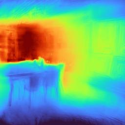
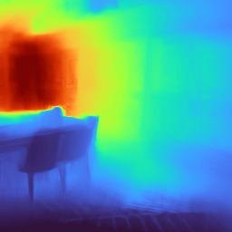
Scr4tch E-RayZer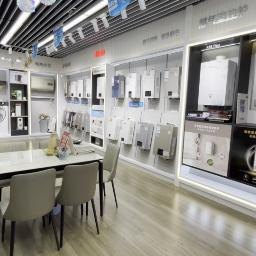
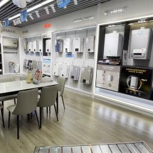
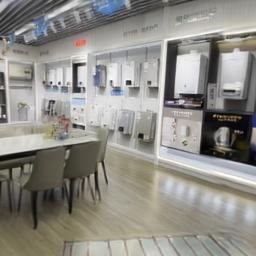
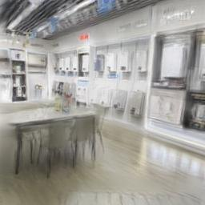
Static scene from DL3DV, rendered from a view between two context views. Drag the divider: Scr4tch depths follow scene structure, while the other methods produce depths distorted by texture.
| Method | PSNR ↑ | SSIM ↑ | LPIPS ↓ |
|---|---|---|---|
| MVSplat (ground-truth cameras) | 20.15 | 0.642 | 0.215 |
| NoPoSplat | 20.87 | 0.669 | 0.197 |
| SPFSplat | 20.58 | 0.654 | 0.213 |
| SelfSplat | 16.20 | 0.406 | 0.496 |
| NAS3R | 18.23 | 0.515 | 0.294 |
| E-RayZer | 18.77 | 0.546 | 0.318 |
| Scr4tch, Gaussian rendering | 21.32 | 0.666 | 0.201 |
| Scr4tch, latent rendering | 21.70 | 0.674 | 0.177 |
Dynamic scenes
NVIDIA Dynamic: each of the 12 input images comes from a different camera at a different time. Rendering other cameras at each input time, Scr4tch shows the correct scene state, with or without the umbrella, despite training on at most 9 frames and without the external geometric and motion supervision used by the baselines.
| Method | PSNR ↑ | SSIM ↑ | LPIPS ↓ |
|---|---|---|---|
| NeoVerse | 15.42 | 0.316 | 0.369 |
| C4G | 16.83 | 0.295 | 0.545 |
| MoVieS (ground-truth cameras) | 17.71 | 0.369 | 0.354 |
| Scr4tch, Gaussian rendering | 17.80 | 0.345 | 0.394 |
Casual YouTube
2,154 hours of casually captured monocular footage, collected for this work and used as raw video: no calibration, no annotations, no geometric preprocessing.
- Footage
- 2,154 hours
- Activities
- Walking, cycling, first-person driving
- Conditions
- Sun, rain, snow and night, often with crowds and low light
- Preprocessing
- None
We release the URLs of all 1,684 videos, one per line. The videos themselves are not redistributed.
Ablations
| Setting | AREf ↓ | RRA@5 ↑ | RTA@5 ↑ | PSNR ↑ |
|---|---|---|---|---|
| Latent + explicit rendering | 0.071 | 0.820 | 0.478 | 17.48 |
| + photometric reprojection | 0.060 | 0.834 | 0.512 | 17.51 |
| + single- and multi-view depth consistency | 0.056 | 0.903 | 0.513 | 17.85 |
| + camera gradient routing (full model) | 0.045 | 0.906 | 0.592 | 17.87 |
| Removing one part of the full model | ||||
| without Casual YouTube | 0.098 | 0.863 | 0.493 | 17.77 |
| without nested dropout | 0.653 | 0.174 | 0.011 | 16.67 |
- Without nested dropout the camera pathway collapses: RTA@5 falls to 0.011, while PSNR stays moderate because large background regions are still reconstructed.
- Camera gradient routing brings the largest gain in translation accuracy; depth consistency brings the largest rendering gain.
- Unprocessed Casual YouTube footage clearly improves camera estimation.
Citation
@article{wang2026scr4tch,
title = {Scr4tch: Self-Supervised 4D Reconstruction from Raw Video Alone},
author = {Wang, Ruoyu and Hu, Jiagao and Huang, Guichen and Wang, Chenyu
and Wang, Fei and Zhou, Daiguo and Hou, Junhui},
journal = {arXiv preprint arXiv:XXXX.XXXXX},
year = {2026}
}